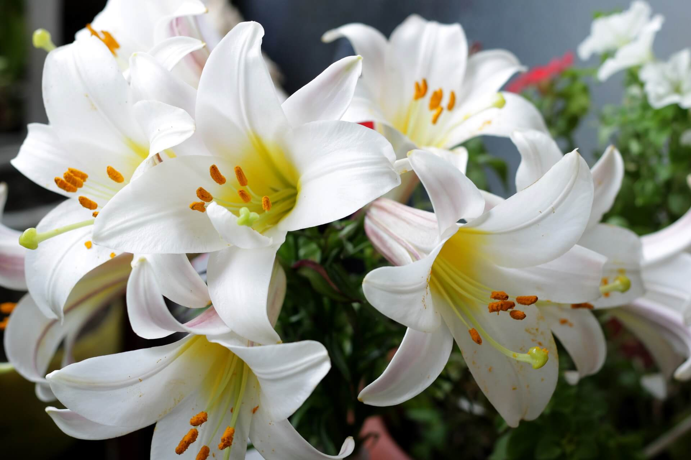

Лилия — это цветок, который воплощает в себе чистоту, грацию и величие. С древних времён она считается символом непорочности, духовности и даже королевской власти. Её элегантная форма и благородный вид завораживают с первого взгляда, а богатая палитра оттенков делает лилию одной из самых выразительных представительниц флоры.
Каждый лепесток лилии нацелен скрафтиться с кропотливым вниманием к деталям, образуя идеально симметричную чашевидную или трубчатую форму. Цветовая гамма этих цветов поражает разнообразием: от нежно-белых и кремовых до насыщенных оранжевых, розовых, фuchsia и даже почти чёрных тонов. Некоторые сорта украшены интересными пятнами или полосками, что добавляет им особой экзотичности.
Аромат лилии — это ещё одна её визитная карточка. Он может быть как мягко сладким, так и более интенсивным, но всегда остаётся утончённым и изысканным. Именно благодаря этому свойству лилия часто используется в парфюмерии, где её ноты придают композициям глубину и шарм.
Лилии отлично подходят для создания букетов и декоративных композиций, добавляя им элегантности и торжественности. Они особенно популярны для оформления свадебных мероприятий, ведь их чистота и безупречность идеально гармонируют с атмосферой этого важного события. Кроме того, эти цветы ознаают возможность восстановления, что делает их отличным выбором для подарка близким людям.